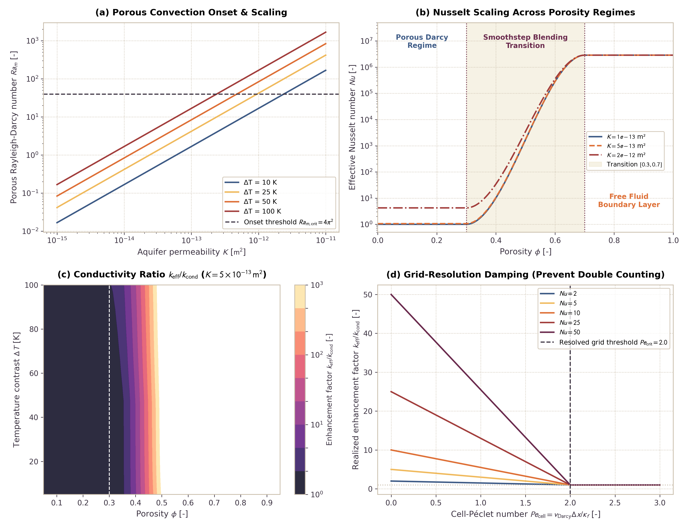

Hydrothermal Subgrid Convection for Porous and Open Water Layers
This page documents the physics equations, constitutive relations, and numerical benchmarks for subgrid hydrothermal convection in Erebus.jl. The model bridges the porous Rayleigh-Darcy regime ($Nu_{\mathrm{porous}} \propto Ra_m$) in planetesimal rock aquifers with boundary-layer free-fluid Rayleigh scaling ($Nu_{\mathrm{free}} \propto Ra^{1/3}$) in open water layers, melt lenses, and oceans through a cubic smoothstep porosity transition. Heat transport closes through effective thermal conductivity enhancement with cell-Péclet resolution weighting and Picard damping.
1. Physical Motivation
Early planetesimals accreted variable mixtures of water ice and anhydrous silicates. Decay of short-lived radionuclides ($^{26}\mathrm{Al}$ and $^{60}\mathrm{Fe}$) heated planetesimal interiors, melted pore ice, and drove hydrothermal fluid flow (Hubmann, 2022; Lichtenberg et al., 2019, 2021):
- Porous Aquifers and Regolith: In porous planetesimal crusts ($\phi \le 0.30$), fluid percolates through rock pore networks. When buoyant thermal forces overcome viscous drag in the rock matrix, porous Rayleigh-Darcy convection develops (Horton and Rogers, 1945; Lapwood, 1948). This circulation homogenizes temperatures, buffers peak core temperatures, and accelerates serpentinization.
- Muddy Slush, Melt Lenses, and Subsurface Oceans: Extensive ice melting and fluid accumulation produce high-porosity slurry layers, water lenses, or global subsurface oceans ($\phi \ge 0.70$). In these fluid-dominated regimes, matrix drag vanishes, and heat transport transitions to boundary-layer free-fluid convection (Kraichnan, 1962; Howard, 1966).
- Subgrid Closure Need: On planetary-scale numerical grids where cell spacing $\Delta x$ exceeds hydrothermal boundary layer thicknesses or Darcy convection cell wavelengths, conduction-only solvers underestimate vertical heat fluxes. Adding subgrid convective heat transport through an enhanced effective thermal conductivity $k_{\mathrm{eff}}$ captures convective heat loss without prohibitive grid refinement.
2. Governing Equations
Porous Rayleigh-Darcy Convection ($Ra_m$)
In fluid-saturated porous rock, the dimensionless Rayleigh-Darcy number sets convective vigor (Horton and Rogers, 1945; Lapwood, 1948):
\[Ra_m = \frac{\rho_f^2 \, c_{p,f} \, g \, \alpha_f \, K \, \Delta T \, H}{\mu_f \, k_{\mathrm{cond}}}\]
where:
- Fluid density $\rho_f$ [$\mathrm{kg/m}^3$] from
compute_rhofluid(T) - Fluid isobaric heat capacity $c_{p,f}$ $\mathrm{J/(kg\,K)}$
- Gravitational acceleration $g$ $\mathrm{m/s}^2$
- Fluid isobaric thermal expansivity $\alpha_f$ $1/\mathrm{K}$
- Medium permeability $K$ [$\mathrm{m}^2$] from the Kozeny-Carman relation $k(\phi)$ or user input
- Convective driving temperature contrast $\Delta T = \max(0.0, T - T_{\mathrm{surface\_ref}})$ [$\mathrm{K}$]
- Characteristic convective layer thickness $H$ $\mathrm{m}$
- Dynamic fluid viscosity $\mu_f$ [$\mathrm{Pa\,s}$] from
compute_fluid_viscosity(T) - Conductive bulk thermal conductivity $k_{\mathrm{cond}}$ [$\mathrm{W/(m\,K)}$]
Onset of porous convection occurs at the critical Rayleigh-Darcy number:
\[Ra_{m,\mathrm{crit}} = 4\pi^2 \approx 39.4784\]
For $Ra_m < Ra_{m,\mathrm{crit}}$, heat transport remains purely conductive ($Nu_{\mathrm{porous}} = 1.0$). Above threshold, the Nusselt number scales linearly (Elder, 1967; Turcotte and Schubert, 2014):
\[Nu_{\mathrm{porous}} = 1.0 + c_{\mathrm{porous}} \left(\frac{Ra_m}{Ra_{m,\mathrm{crit}}} - 1.0\right)\]
with prefactor $c_{\mathrm{porous}} = 1.0$.
Free-Fluid Rayleigh Convection ($Ra$)
In open fluid layers and oceans ($\phi \ge \phi_{\mathrm{end}}$), viscous matrix drag vanishes, and the thermal Rayleigh number sets convective vigor:
\[Ra = \frac{\rho_f^2 \, c_{p,f} \, g \, \alpha_f \, \Delta T \, H^3}{\mu_f \, k_f}\]
where $k_f$ is fluid thermal conductivity (default: $0.6\text{ W/(m K)}$). Critical onset occurs at $Ra_{\mathrm{crit}} \approx 1100.0$. In turbulent boundary-layer convection, heat transport follows Kraichnan (1962) and Howard (1966) asymptotic $1/3$ power law scaling:
\[Nu_{\mathrm{free}} = \begin{cases} 1.0, & Ra \le Ra_{\mathrm{crit}} \\ \max\left(1.0, c_{\mathrm{free}} \, Ra^{1/3}\right), & Ra > Ra_{\mathrm{crit}} \end{cases}\]
with boundary layer coefficient $c_{\mathrm{free}} = 0.088$.
Porosity Transition and Cubic Smoothstep Blending
Between the pure porous regime ($\phi \le \phi_{\mathrm{start}} = 0.30$) and open water regime ($\phi \ge \phi_{\mathrm{end}} = 0.70$), fluid and matrix coexist in variable proportions. The model evaluates a normalized porosity coordinate:
\[\xi = \mathrm{clamp}\left(\frac{\phi - \phi_{\mathrm{start}}}{\phi_{\mathrm{end}} - \phi_{\mathrm{start}}}, 0.0, 1.0\right)\]
and cubic smoothstep weighting factor:
\[w_\phi = \xi^2 \, (3.0 - 2.0 \, \xi)\]
Nusselt numbers blend in logarithmic space:
\[\log_{10}(Nu) = (1.0 - w_\phi) \log_{10}(Nu_{\mathrm{porous}}) + w_\phi \log_{10}(Nu_{\mathrm{free}})\]
\[Nu = 10^{\log_{10}(Nu)}\]
Because $w_\phi'(0) = 0$ and $w_\phi'(1) = 0$, the transition is $C^1$ smooth at both regime boundaries.
Cell-Péclet Resolution Weighting and Picard Damping
When Darcy flow is resolved directly on the Eulerian grid, applying the full subgrid convective conductivity would double-count convective heat flux. To prevent double-counting, the solver computes the grid cell-Péclet number:
\[Pe_{\mathrm{cell}} = \frac{v_{\mathrm{Darcy}} \, \Delta x}{\kappa_f}\]
where $\kappa_f = k_{\mathrm{cond}} / (\rho_f \, c_{p,f})$ is thermal diffusivity. The resolution weighting factor:
\[w_{\mathrm{res}} = \mathrm{clamp}\left(\frac{Pe_{\mathrm{cell}}}{Pe_{\mathrm{crit}}}, 0.0, 1.0\right)\]
damps the target convective conductivity toward the conductive baseline when $Pe_{\mathrm{cell}} \to Pe_{\mathrm{crit}} = 2.0$:
\[k^\dagger = (1.0 - w_{\mathrm{res}}) \, k_{\mathrm{target}} + w_{\mathrm{res}} \, k_{\mathrm{cond}}\]
Picard damping stabilizes non-linear iterations:
\[k_{\mathrm{eff}} = (1.0 - \gamma) \, k_{\mathrm{prev}} + \gamma \, k^\dagger\]
where $\gamma \in (0, 1]$ is the damping factor (default: $0.5$).
3. Benchmark Results and Numerical Checks
The benchmark figure below illustrates scaling behavior in all four operational regimes:

Panel Descriptions
- (a) Porous Convection Onset and Scaling: $Ra_m$ versus medium permeability $K$ for thermal driving scales $\Delta T \in [10, 25, 50, 100]\text{ K}$. Convection initiates once permeability exceeds $K \approx 5 \times 10^{-14}\text{ m}^2$, matching analytical Horton-Rogers-Lapwood criteria ($Ra_{m,\mathrm{crit}} = 4\pi^2$).
- (b) Nusselt Scaling in Porosity Regimes: Continuous transition from linear porous Darcy scaling ($Nu_{\mathrm{porous}} \propto Ra_m$) to asymptotic boundary-layer scaling ($Nu_{\mathrm{free}} \propto Ra^{1/3}$) through the smoothstep transition zone $[0.30, 0.70]$.
- (c) Conductivity Ratio $k_{\mathrm{eff}} / k_{\mathrm{cond}}$: State space contour map of porosity $\phi$ and temperature contrast $\Delta T$. Convective enhancement factors exceed $10^2$ in permeable aquifers and approach $10^3$ in open fluid lenses.
- (d) Grid-Resolution Damping: Attenuation of subgrid enhancement as cell-Péclet number $Pe_{\mathrm{cell}}$ approaches $Pe_{\mathrm{crit}} = 2.0$. Resolved Darcy advection replaces subgrid conduction smoothly without flux jumps.
4. Configuration Schema
Hydrothermal subgrid convection is configured via the [hydrothermal] table in SimulationConfig:
| Parameter | Type | Default | Units | Description |
|---|---|---|---|---|
active | Bool | false | - | Master activation switch for subgrid hydrothermal closure |
phi_start | Float64 | 0.30 | - | Lower porosity boundary for smoothstep transition |
phi_end | Float64 | 0.70 | - | Upper porosity boundary for smoothstep transition |
Ra_m_crit | Float64 | 39.4784 | - | Critical Rayleigh-Darcy number for porous convection onset ($4\pi^2$) |
Ra_crit | Float64 | 1100.0 | - | Critical Rayleigh number for free-fluid convection onset |
c_porous | Float64 | 1.0 | - | Linear scaling prefactor for porous Nusselt number |
c_free | Float64 | 0.088 | - | Boundary-layer scaling coefficient for free-fluid Nusselt number |
H_layer | Float64 | 10000.0 | $\mathrm{m}$ | Characteristic convective layer thickness |
dT_min | Float64 | 5.0 | $\mathrm{K}$ | Temperature contrast threshold for quadratic boundary regularization |
k_floor | Float64 | 1.0e-3 | $\mathrm{W/(m\,K)}$ | Minimum thermal conductivity floor |
k_cutoff | Float64 | 1.0e6 | $\mathrm{W/(m\,K)}$ | Maximum enhanced thermal conductivity ceiling |
picard_damping | Float64 | 0.5 | - | Picard iteration damping factor $\gamma \in (0, 1]$ |
resolution_weighting | Bool | true | - | Enable cell-Péclet grid-resolution damping |
Pe_crit | Float64 | 2.0 | - | Critical cell-Péclet number for full grid-resolution transition |
T_surface_ref | Float64 | 273.15 | $\mathrm{K}$ | Reference ambient surface temperature for convective driving scale |
gravity | Float64 | 0.5 | $\mathrm{m/s}^2$ | Reference gravitational acceleration |
cp_fluid | Float64 | 4184.0 | $\mathrm{J/(kg\,K)}$ | Fluid isobaric heat capacity |
alpha_fluid | Float64 | 2.0e-4 | $1/\mathrm{K}$ | Fluid isobaric thermal expansivity |
k_fluid_ref | Float64 | 0.6 | $\mathrm{W/(m\,K)}$ | Reference fluid thermal conductivity |
rho_fluid_ref | Float64 | 1000.0 | $\mathrm{kg/m}^3$ | Reference fluid density |
mu_fluid_ref | Float64 | 1.0e-3 | $\mathrm{Pa\,s}$ | Reference dynamic fluid viscosity |
kphi_ref | Float64 | 1.0e-13 | $\mathrm{m}^2$ | Baseline reference permeability |
5. Literature References
- Elder, J. W. (1967). Steady free convection in a porous medium heated from below. Journal of Fluid Mechanics, 27(1), 29-48. https://doi.org/10.1017/s0022112067000023
- Horton, C. W., & Rogers, F. T. (1945). Convection currents in a porous medium. Journal of Applied Physics, 16(6), 367-370. https://doi.org/10.1063/1.1707601
- Howard, L. N. (1966). Convection at high Rayleigh number. In Applied Mechanics (pp. 1109-1115). Springer, Berlin, Heidelberg. https://doi.org/10.1007/978-3-662-29364-5_147
- Kraichnan, R. H. (1962). Turbulent thermal convection at arbitrary Prandtl number. The Physics of Fluids, 5(11), 1374-1389. https://doi.org/10.1063/1.1706533
- Lapwood, E. R. (1948). Convective flow of a fluid through a porous medium. Mathematical Proceedings of the Cambridge Philosophical Society, 44(4), 508-521. https://doi.org/10.1017/S030500410002452X
- Turcotte, D. L., & Schubert, G. (2014). Geodynamics (3rd ed.). Cambridge University Press. https://doi.org/10.1017/CBO9780511843877